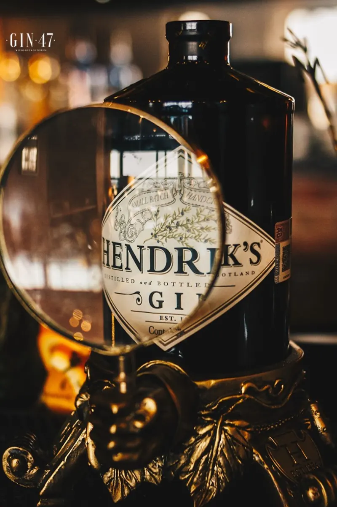
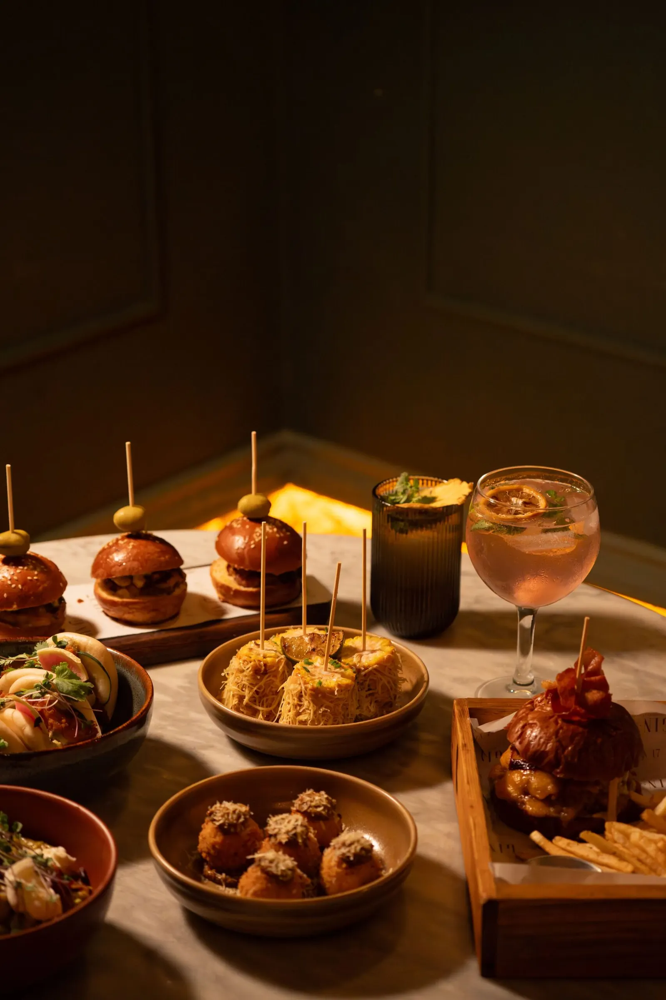

Chapter 05 — Yucatán
Yucatán, in the glass.
A London-born spirit, poured with ingredients from the peninsula.
Why it matters
The specimens behind the menu.
Gin came from Europe, but at Gin 47 it is cut with what Yucatán grows and cooks. Xcatic chili alone appears in more than ten dishes and drinks on the current menu.
Below, five ingredients shown like plates in a natural history book: what each one is, and where to find it on the menu. Gold tags in the kitchen and cocktail chapters point back here.
Five Yucatecan ingredients
-
I
Xcatic
Capsicum annuum · chile xcatic
A long, pale yellow-green chili from the Yucatán Peninsula, with mild to medium heat. Grilled or roasted, it turns sweet and smoky.
- On the menu
- Boneless 47, Tuna Tostones, Hibiscus Empanadas, Korean Burger, Pita Verde
- At the bar
- Gin 47, Mayan Gin, Agave Chel, Bloody Gin

Tuna tostones, xcatic avocado mousse -
II
Queso de bola
Edam-style ball cheese
A Dutch-style cheese in a red wax ball. It arrived through the port trade and became part of Yucatecan cooking, most famously in queso relleno.
- On the menu
- Boneless 47, Corn with Steak, Gin 47 Corn, Serrano Ham Croquettes

Entrees to share -
III
Salbutes
Fried, puffed corn tortillas
A Yucatecan street-food classic: a small tortilla fried until it puffs, then topped. Gin 47 tops theirs with fresh guacamole, rib eye crackling, chiltomate and red wine onion.
- On the menu
- Rib Eye Salbutes, $245
-
IV
Xtabentún
Honey and anise liqueur
A Yucatecan liqueur made with anise and honey from the xtabentún flower, a morning glory that blooms across the peninsula. Sweet, herbal and made for after dinner.
- On the menu
- Carajillo Maya (Xtabentún Casa D'Aristi), Deep Fried Oreo
-
V
Katún
Gin made in Yucatán
The only gin on the list made in Yucatán. Gin 47 serves it as a gin & tonic with radish, cilantro and banana leaf, a garnish taken straight from the local kitchen.
- At the bar
- Katún Gin & Tonic, $165

House gin & tonics
The place
Centro, Calle 47.
Gin 47 sits in the Corredor Gastronómico of Mérida's historic centre, between Calles 52 and 54. Walk there from the Paseo de Montejo area and end the night with a xtabentún.
See the map